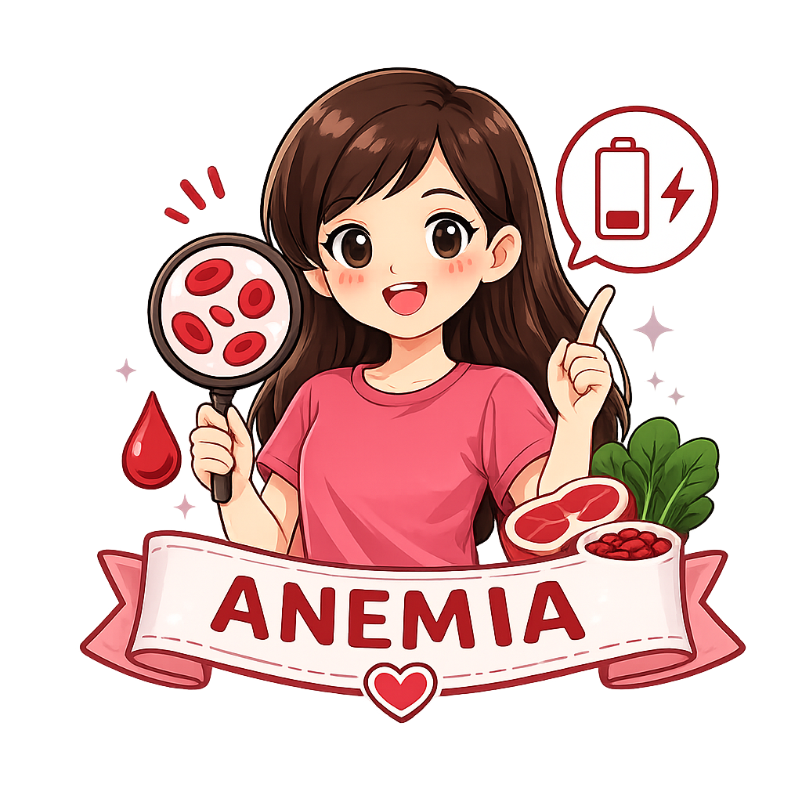

Anemia merupakan kondisi ketika jumlah sel darah merah atau kadar hemoglobin dalam darah lebih rendah dari normal. Remaja putri memiliki risiko lebih tinggi mengalami anemia karena pertumbuhan yang cepat dan kehilangan darah saat menstruasi. Dengan memahami anemia, remaja dapat melakukan pencegahan sejak dini.

Pelajari penyebab, gejala, dan cara mencegah anemia agar tubuh tetap sehat.
Anemia adalah kondisi ketika kadar hemoglobin (Hb) dalam darah berada di bawah nilai normal sehingga tubuh kekurangan oksigen. Hemoglobin berfungsi membawa oksigen ke seluruh jaringan tubuh. Jika jumlahnya rendah, tubuh akan mudah lelah dan tidak mampu bekerja secara optimal (World Health Organization 2023).
Anemia dapat dicegah dengan menerapkan pola hidup sehat dan memenuhi kebutuhan zat besi setiap hari.
Tablet Tambah Darah mengandung zat besi dan asam folat yang membantu pembentukan sel darah merah. Remaja putri dianjurkan mengonsumsi Tablet Tambah Darah sesuai program pemerintah atau anjuran tenaga kesehatan untuk membantu mencegah anemia.
| Makanan | Kandungan | Manfaat |
|---|---|---|
| 🥩 Daging merah | Zat besi heme | Mudah diserap tubuh. |
| 🍗 Hati ayam/sapi | Zat besi tinggi | Membantu pembentukan hemoglobin. |
| 🐟 Ikan | Zat besi & protein | Mendukung kesehatan darah. |
| 🥬 Bayam | Zat besi non-heme | Baik dikonsumsi bersama vitamin C. |
| 🫘 Kacang-kacangan | Zat besi & protein nabati | Membantu memenuhi kebutuhan zat besi. |
| 🥚 Telur | Zat besi & protein | Membantu pertumbuhan tubuh. |
Vitamin C membantu meningkatkan penyerapan zat besi. Konsumsilah jeruk, jambu biji, stroberi, tomat, atau pepaya bersama makanan sumber zat besi.
Teh dan kopi mengandung tanin yang dapat menghambat penyerapan zat besi. Beri jeda sekitar 1–2 jam setelah makan sebelum mengonsumsinya.
Sarapan membantu memenuhi kebutuhan energi dan nutrisi sehingga tubuh tetap aktif sepanjang hari.
Cukupi kebutuhan cairan setiap hari agar metabolisme tubuh berjalan dengan baik dan tubuh tetap bugar.
Anemia hanya dialami oleh orang dewasa.
Remaja yang terlihat kurus pasti mengalami anemia.
Minum Tablet Tambah Darah akan menyebabkan ketergantungan.
Anemia dapat dialami oleh siapa saja, termasuk remaja putri.
Anemia hanya dapat dipastikan melalui pemeriksaan kadar hemoglobin oleh tenaga kesehatan.
Tablet Tambah Darah aman dikonsumsi sesuai anjuran dan tidak menyebabkan ketergantungan.
Pelajari cara mengenali dan mencegah anemia pada remaja putri.
Unduh infografis tentang anemia sebagai media belajar mandiri.
Download Infografis